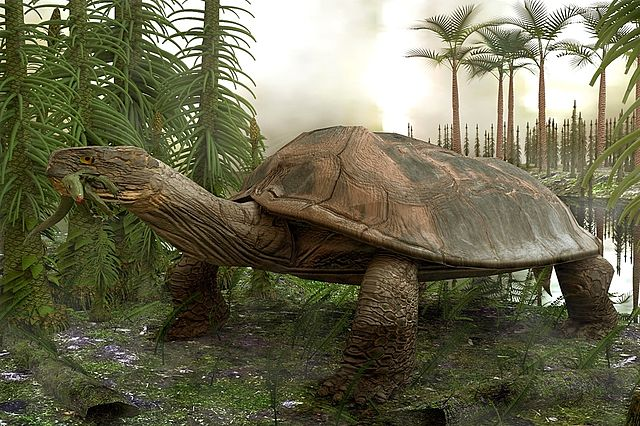
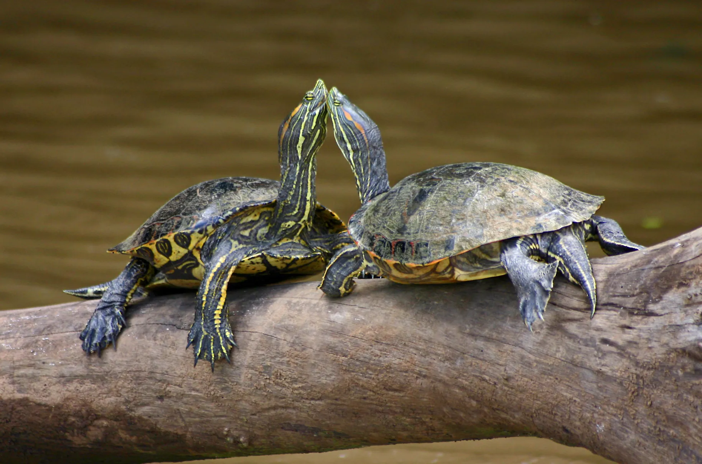
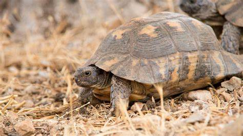
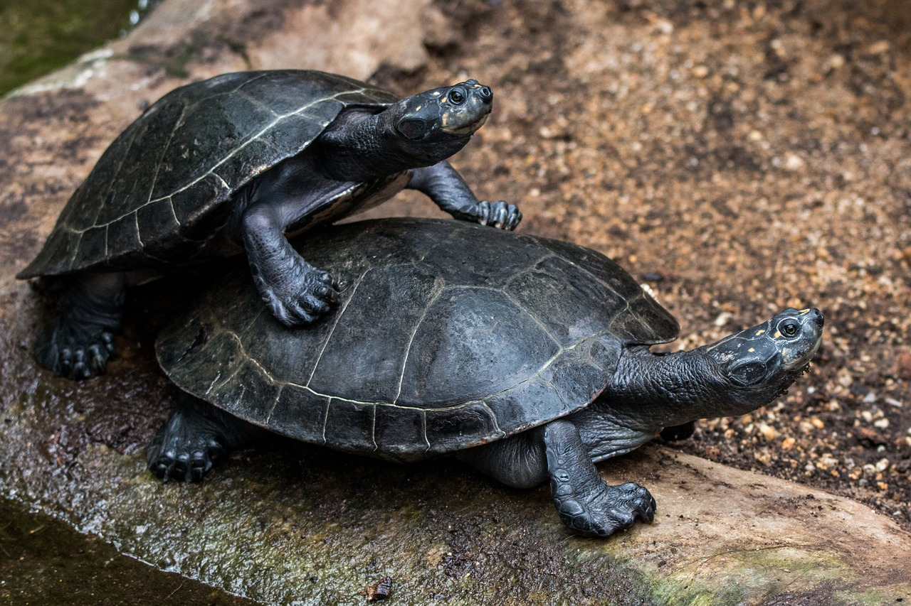

Un viaje milenario
Las tortugas son reptiles antiguos que han habitado la Tierra durante más de 200 millones de años. Su caparazón, símbolo de protección y longevidad, las distingue de cualquier otro animal. Existen tortugas marinas, terrestres y de agua dulce, todas adaptadas a diferentes hábitats y estilos de vida. Su andar pausado y su longevidad las han convertido en un símbolo de sabiduría en muchas culturas.
Estilo de vida y relaciones sociales

Las tortugas suelen ser animales solitarios, aunque en ciertas épocas, como la reproducción, se agrupan en grandes cantidades. Las tortugas marinas migran miles de kilómetros entre las zonas de alimentación y las playas donde nacieron para desovar. Las terrestres, por su parte, establecen territorios y pueden convivir con otras tortugas en espacios amplios. Su vida social es limitada, pero muestran comportamientos de reconocimiento y defensa de su espacio.
Dieta y alimentación
La dieta de las tortugas varía según la especie. Las marinas se alimentan de algas, medusas y pequeños invertebrados, mientras que las terrestres prefieren hierbas, frutas y flores. Las de agua dulce pueden ser omnívoras, incluyendo peces y caracoles en su dieta. Su mandíbula fuerte les permite triturar el alimento, y su digestión es lenta, adaptada a su ritmo de vida tranquilo.
Habilidades y características

El caparazón de la tortuga es una estructura ósea única que le brinda protección contra depredadores. Pueden retraer la cabeza y las patas dentro del caparazón para protegerse. Las tortugas marinas son excelentes nadadoras, capaces de recorrer grandes distancias, mientras que las terrestres son expertas excavadoras. Su sentido del olfato es muy desarrollado y les ayuda a encontrar alimento y orientarse.
Esperanza de vida y amenazas
Las tortugas son famosas por su longevidad, pudiendo vivir más de 100 años en algunos casos. Sin embargo, enfrentan muchas amenazas: la destrucción de hábitats, la contaminación, la caza y la pesca incidental han reducido drásticamente sus poblaciones. Los depredadores naturales atacan principalmente a los huevos y crías, ya que los adultos están bien protegidos por su caparazón.
Reproducción y vínculos familiares
